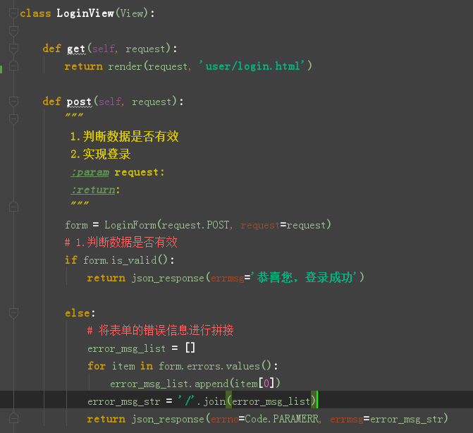
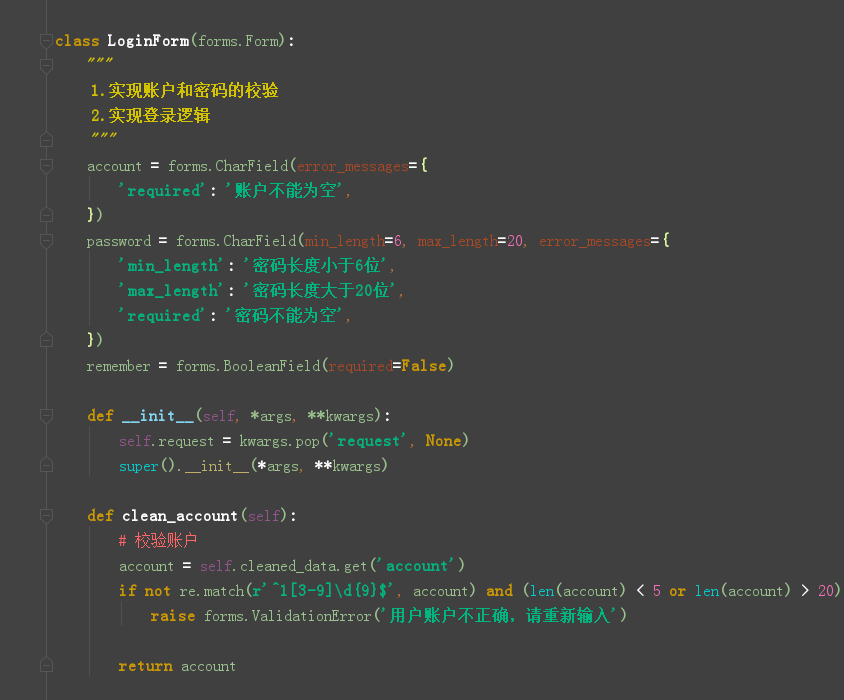
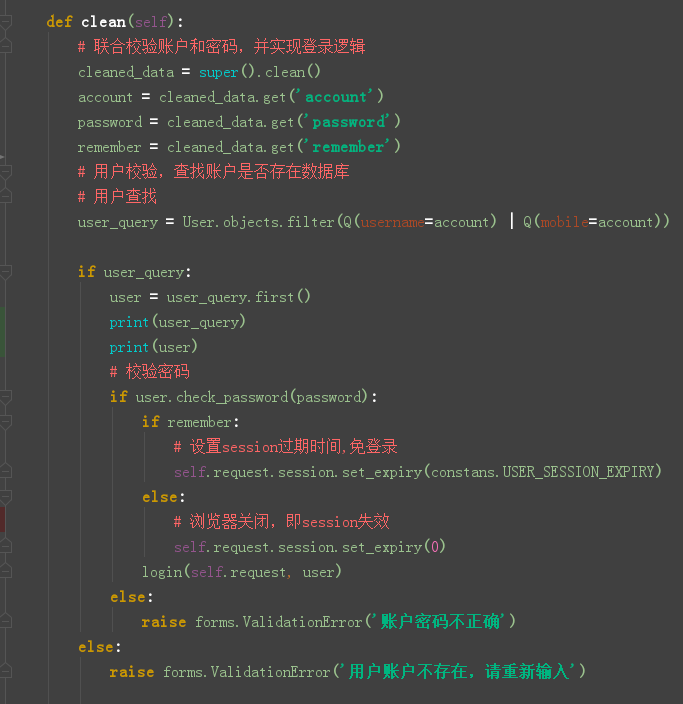
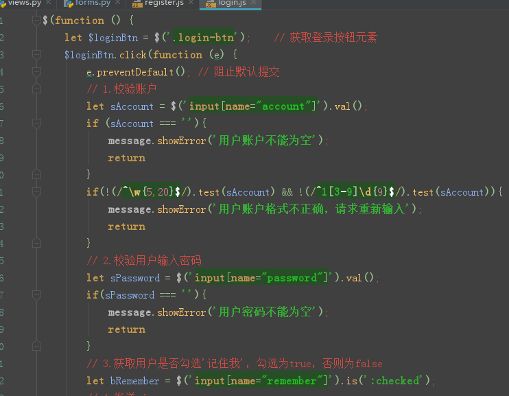
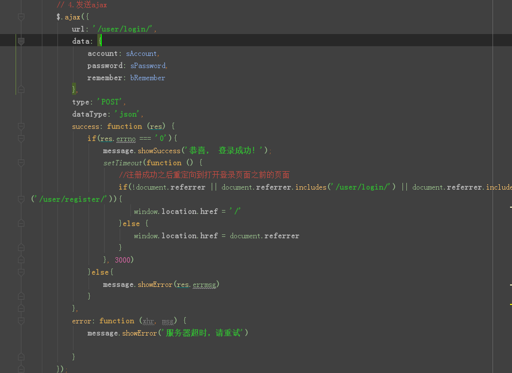

按照之前的步骤，还是从接口设计，参数说明，数据返回，前后端代码编写，来实施。
登录页面的访问
| 类目 | 说明 |
| 请求方式 | get |
| url | /user/login/ |
| 参数 | 不需要 |
| 类目 | 说明 |
| 请求方式 | post |
| url | /user/login/ |
| 参数 | 表单 |
| 参数名 | 类型 | 是否必须 | 描述 |
| account | 字符串 | 是 | 用户输入的账号 |
| password | 字符串 | 是 | 用户输入的密码 |
| remember | 布尔 | 否 | 是否记住我 |
登录以后的页面





以上就是用户的登录登出功能，注意这里的登录登出功能使用的是django自带的User模型的Login和Logout，谢谢大家！！！